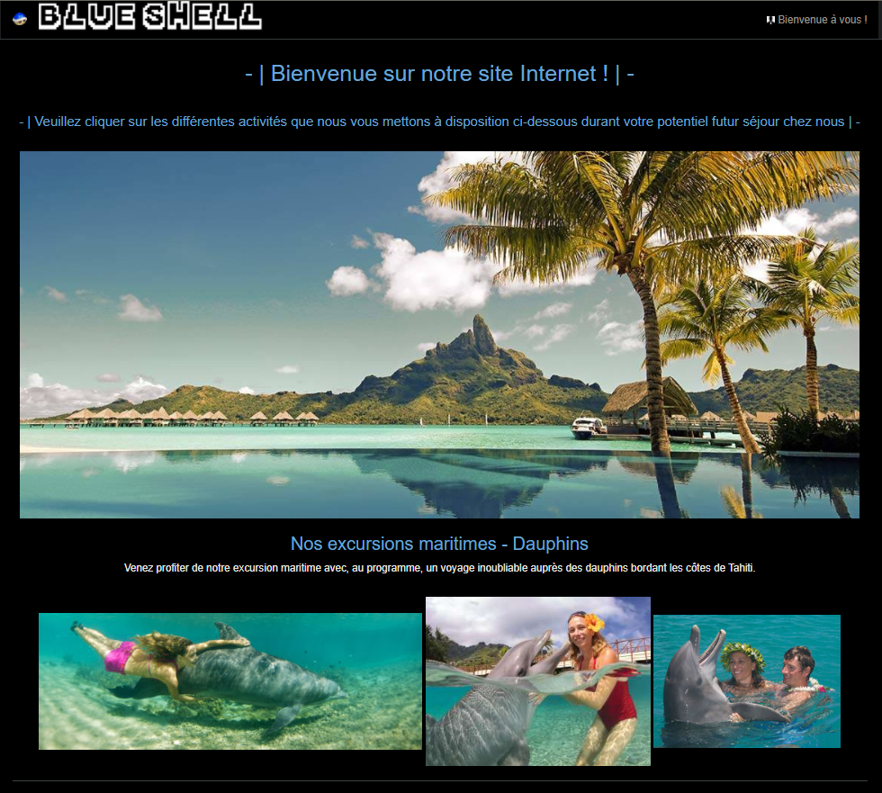

N'ayant pu obtenir un stage à cause du confinement mise en place pour contrer le COVID-19, ma professeure me proposa différents cahier des charges me demandant de créer un site web pour une entreprise fictive afin de "remplacer" le stage que je n'ai pu avoir.
J'ai donc sélectionner un cahier des charges portant sur une agence située à Tahiti proposant diverses activités découvertes aquatiques (rencontre des dauphins, orques, requins, raies, tortues, crabes, ect…). Le site fut entièrement construit depuis Bootstrap.

Veuillez trouver le cahier des charges de ce site en cliquant ici.
Pour consulter la notice utilisateur de ce site, veuillez cliquez sur ce lien.
Pour télécharger le programme sous RAR, veuillez cliquez sur ce lien.
Stage de 2nd année :
Service Informatique du Centre Hospitalier de Digne-les-Bains
J'ai pu effectué mon stage de seconde année de BTS dans le Service Informatique de l'hôpital de Digne-les-Bains où
j'ai pu y faire la connaissance de Jerôme, mon tuteur de stage et responsable du Service Informatique ainsi que de son équipe
composant deux Sylvains, Olivier et Yannick.
C'est avec ce dernier que j'ai pu apprendre beaucoup de choses sur le métier qu'il exerce depuis
maintenant 10 ans, et avec lequelle j'ai pu notamment participer à la mission principale du stage : remplacer l'intégralité du réseau Wi-Fi du
Centre Hospitalier par des bornes ARUBA beaucoup plus puissantes en terme de débits et de signaux, tout y est décrit dans mon journal de stage que
vous pouvez retrouver ci-joint :